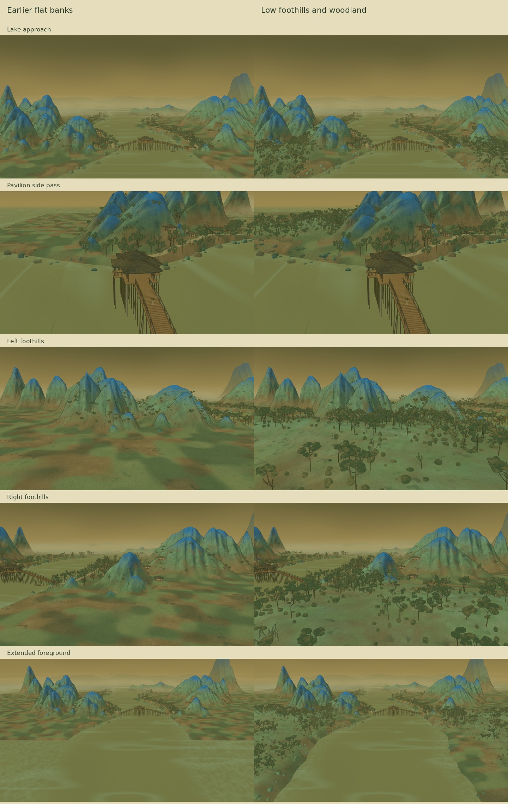

Wooded foothills
Low rounded hills, groves and broken groundcover carry the mountain slopes into the foreground. Both banks continue beyond the earlier edge, with scattered stones along the softer shoreline.
Preparing video…
30 seconds · 1600 × 900 · 24 fps · Ink brushwork, drifting mist, wind and water.
Compare the earlier banks and the new foothills
